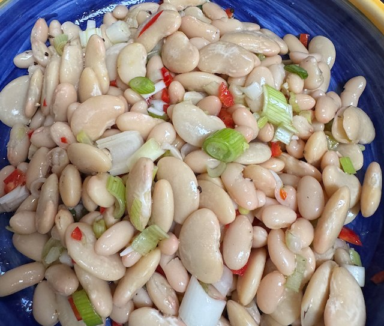

Cannellini and Butterbean Salad

Serves: 4
Cook Time: 15 min
Ingredients
- 1 400g tin cannellini bean, drained and rinsed
- 1 400g tin butterbeans, drained and rinsed
- 1 bunch spring onions, chopped
- 2 garlic cloves, mashed
- 1 red chilli, seeded and chopped
- handful parsley, chopped
- salt and pepper
- Dressing
- 6 tbsp olive olive
- 2 tbsp white wine vinegar
Method
Add the ingredients to a bowl and mix. Add salt and pepper.
Dressing. Whisk together the olive oil and vinegar, and pour over the salad. Mix and taste for salt.